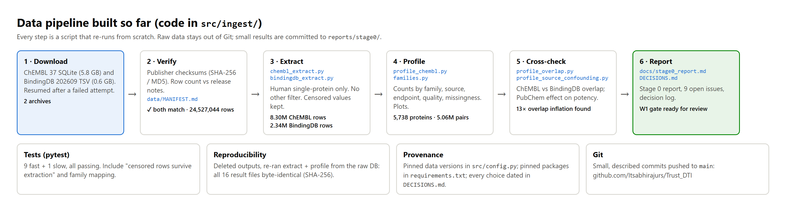
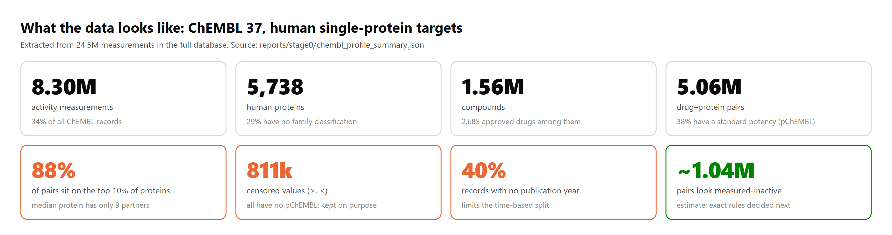
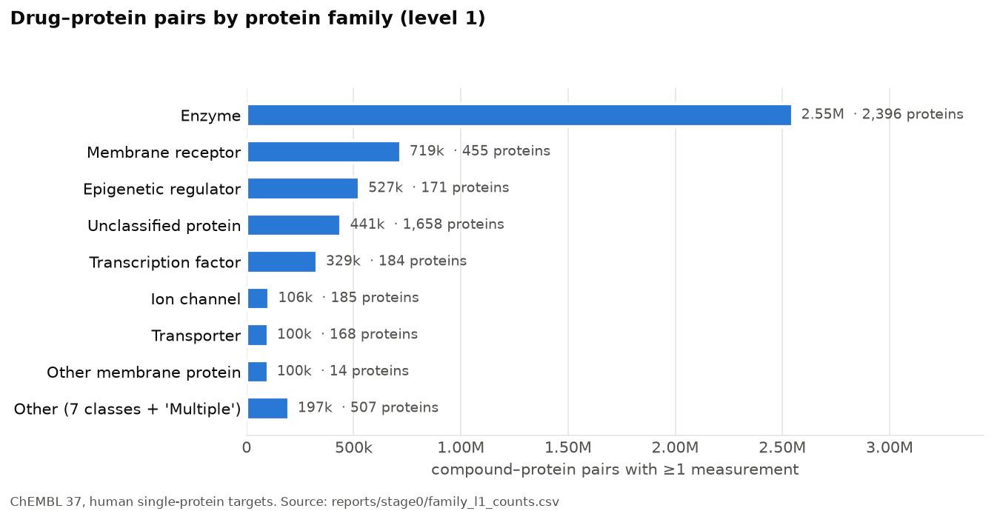
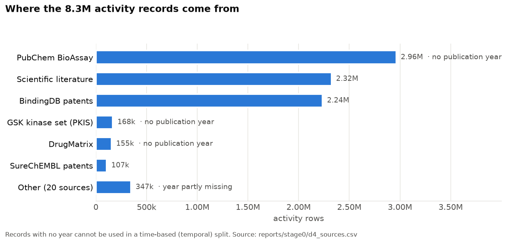
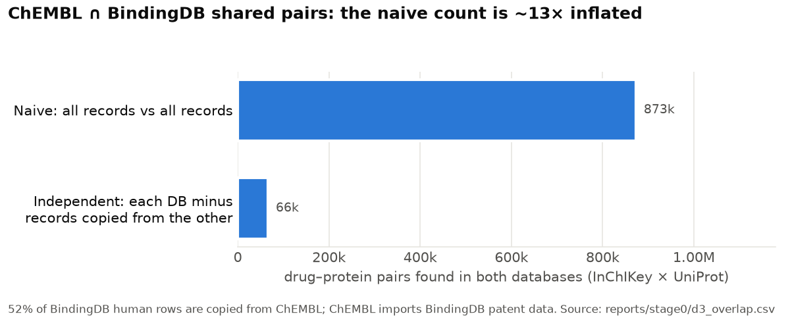
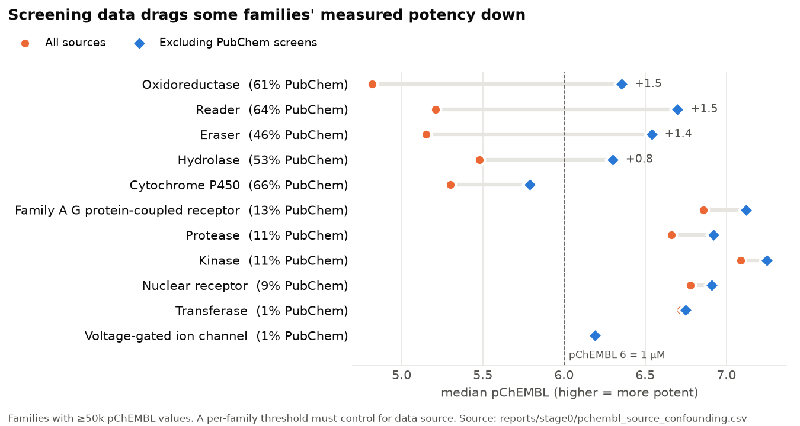
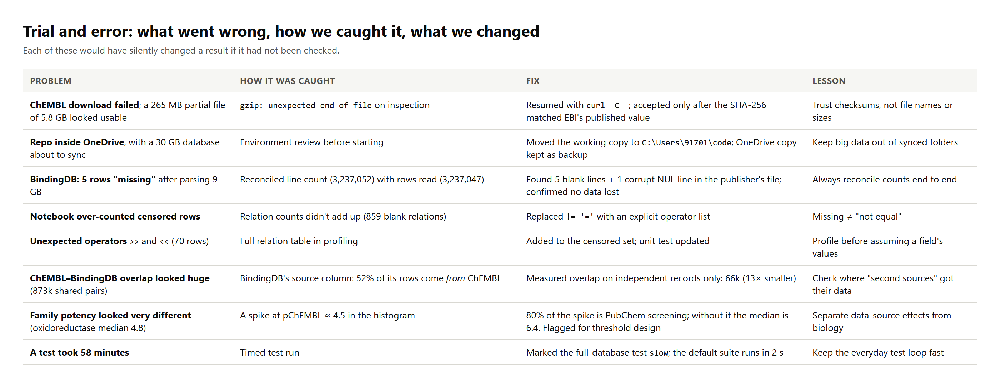

Code: github.com/Itsabhirajurs/Trust_DTI (src/ingest, tests, reports/stage0) · Full data report: docs/stage0_report.md
BuiltVerified downloads, extraction for both databases, profiling, overlap and source analysis, 10 tests.
Found5.06M drug–protein pairs on 5,738 proteins. The databases copy each other. Screening data distorts potency per family.
NextLock the dataset rules (endpoints, thresholds, inactive labels, minimum data per protein, time split) from these numbers.
1What we built

Figure 1. Pipeline steps, the script behind each, and the checks around them.

Figure 2. The dataset at a glance (ChEMBL 37, human single-protein targets).
2What the data showed
Uneven coverage. Enzymes dominate, and data is concentrated on a few proteins: the top 10% of proteins hold 88% of all pairs, while half have fewer than 10 partners. This affects how we split data for "new protein" testing.

Figure 3. Pairs and proteins per family. 1,658 proteins (29%) have no family classification but only sparse data.
Mixed origins. A third of records are PubChem screening results, which have no publication year and so cannot be used in a time-based split.

Figure 4. Records by source.
3Two findings that change the plan
(a) The second database is mostly a copy. 52% of BindingDB's human records come from ChEMBL, and ChEMBL imports BindingDB's patent data. Counted naively the overlap looks large; on independent records only it is 13× smaller. BindingDB would add about 8% new pairs, mostly patents (likely newer than ChEMBL 37, which is still to be checked). Recommendation: use ChEMBL only for the first network, and check whether those patents could strengthen the time-based test.

Figure 5. Shared drug–protein pairs, naive vs independent.
(b) Screening data distorts family potency. 80% of the low-potency spike at pChEMBL ≈ 4.5 comes from PubChem screens. For oxidoreductases the median moves from 4.8 to 6.4 when screens are excluded. A per-family activity threshold must therefore control for data source, or it will treat screening artefacts as biology.

Figure 6. Median potency per family, with and without PubChem screening data.
4Trial and error

Figure 7. Problems found while building, how each was caught, and what changed.
5Quality checks
Checksums: ChEMBL SHA-256 and BindingDB MD5 both match the publishers' values. The database row count (24,527,044) matches the release notes.
Tests: 10 automated tests, all passing. They cover censored-value parsing, the family mapping, "censored rows survive extraction" (checked against a direct SQL count) and a full-database row check.
Reproducibility: we deleted the outputs and re-ran extraction and profiling from the raw database. All 16 result files came out byte-identical.
6Open questions for next week
Which endpoints count: IC50/Ki/Kd/EC50 only, or also screening "Potency" (2.69M rows)?
Activity thresholds per family that control for data source (finding b).
Rules for measured-inactive labels (~1.04M candidate pairs); "inconclusive" stays UNTESTED.
Time-split cutoff, given that 40% of rows have no year.
Minimum data per protein for a meaningful "new protein" test (2,883 proteins have <10 partners).
Confidence floor (only 8 or 9 occur); handling of duplicates and curator-flagged values; BindingDB decision.
7How to reproduce
pip install -r requirements.txt
python -m src.ingest.chembl_extract # needs data/raw/chembl_37 (see data/MANIFEST.md)
python -m src.ingest.bindingdb_extract
python -m src.ingest.profile_chembl
python -m src.ingest.profile_overlap
python -m src.ingest.profile_source_confounding
pytest # fast tests; pytest -m slow for the full-database check
Supporting files in this folder: W3_01–W3_09 (figures; W3_07 interaction skew and W3_08 potency distribution are in the folder only), references.md, WEEK03_FORM_ENTRIES.md. Figures are built from committed data by docs/weekly_reports/_build/.